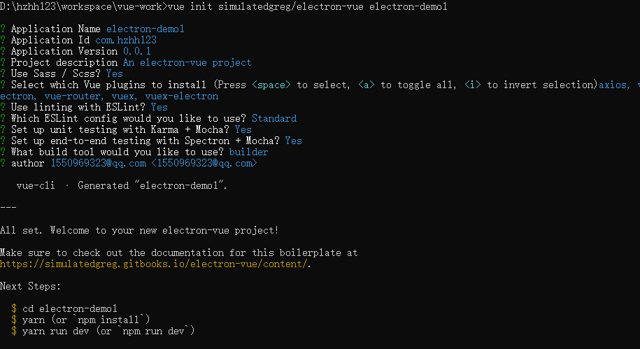
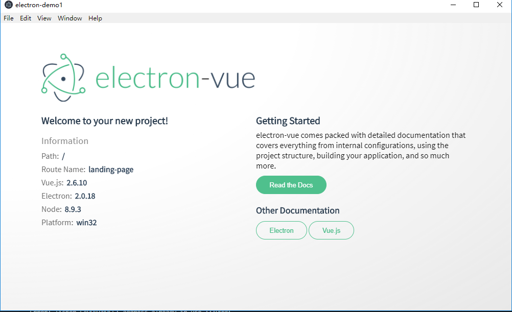
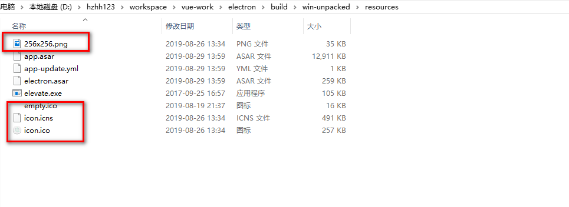
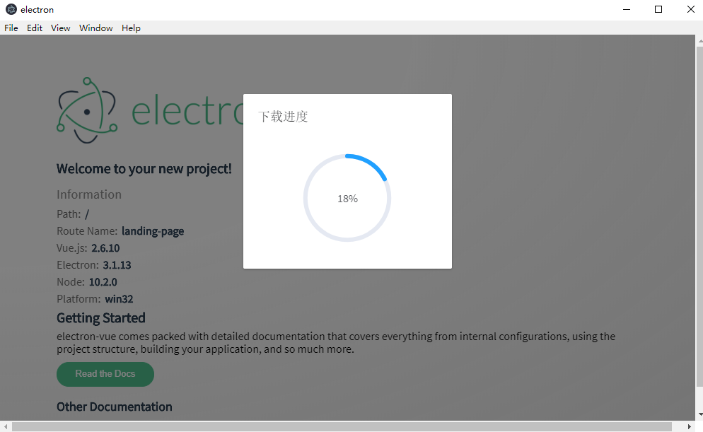

具体参考https://www.cnblogs.com/lgx5/p/10732016.html
vue init simulatedgreg/electron-vue my-project

https://electronjs.org/
npm install
npm run dev

npm run build
"win": {
"icon": "build/icons/icon.ico",
"target": "nsis"
},
"nsis": {
"oneClick": false,
"allowToChangeInstallationDirectory": true,//自定义安装目录
"allowElevation": true,
"installerIcon": "build/icons/icon.ico",
"createDesktopShortcut": true //生成桌面图标
},
"extraResources": {
"from": "build/icons",
"to": "./"
},
说明：extraResources是把图标资源复制到打包后的根目录,以后托盘时会用到，如图，

在package.json中添加如下配置：
"publish": [
{
"provider": "generic",
"url": "http://127.0.0.1:8090/demo/"
}
]
说明：url是自己放置更新程序包的访问地址，这里的地址是使用nginx构建的文件服务器地址,上面的这个地址一定要配置，否则在打包时无法生成app-update.yml文件而会导致无法升级
"electron-updater": "^4.0.0"
升级的时候往往就是因为electron-updater版本不搭配，导致一些乱七八糟的问题出现，此时electron的版本是2.0.4，打包的时候如果electron-updater的版本小于4.0.0，会出现无法打包，所以修改electron-updater的版本为^4.0.0
// =================================================================================================================
// 更新升级，注意这个autoUpdater不是electron中的autoUpdater
// 更新地址
const fs = require('fs-extra')
const updateURL = 'http://127.0.0.1:8090/demo/update/'
// 检测更新，在你想要检查更新的时候执行，renderer事件触发后的操作自行编写
export function handleUpdate () {
//= ==============================================================================================================
// 清除每次更新下载的文件，否则无法进行更新
//= ==============================================================================================================
// updaterCacheDirName的值与src/main/app-update.yml中的updaterCacheDirName值一致，在windows中会创建一个类似
// C:\Users\Administrator\AppData\Local\electron-updater1\pending文件存储更新下载后的文件"*.exe"和"update-info.json"
let updaterCacheDirName = 'electron-updater1'
const updatePendingPath = path.join(autoUpdater.app.baseCachePath, updaterCacheDirName, 'pending')
log.warn(updatePendingPath)
fs.emptyDir(updatePendingPath)
log.warn(autoUpdater.app.baseCachePath)
//= =================================================================================================================
const message = {
error: '检查更新出错',
checking: '正在检查更新……',
updateAva: '检测到新版本，正在下载……',
updateNotAva: '现在使用的就是最新版本，不用更新'
}
// 设置是否自动下载，默认是true,当点击检测到新版本时，会自动下载安装包，所以设置为false
autoUpdater.autoDownload = false
autoUpdater.logger = log
// https://github.com/electron-userland/electron-builder/issues/1254
if (process.env.NODE_ENV === 'development') {
autoUpdater.updateConfigPath = path.join(__dirname, 'default-app-update.yml')
} else {
autoUpdater.updateConfigPath = path.join(__dirname, '../../../app-update.yml')
}
autoUpdater.setFeedURL(updateURL)
autoUpdater.on('error', function () {
mainWindow.webContents.send(message.error)
})
autoUpdater.on('checking-for-update', function () {
mainWindow.webContents.send(message.checking)
})
autoUpdater.on('update-available', function (info) {
mainWindow.webContents.send(message.updateAva)
})
autoUpdater.on('update-not-available', function (info) {
mainWindow.webContents.send(message.updateNotAva)
})
// 更新下载进度事件
autoUpdater.on('download-progress', function (progressObj) {
log.warn('触发下载。。。')
console.log(progressObj)
log.warn(progressObj)
mainWindow.webContents.send('downloadProgress', progressObj)
})
autoUpdater.on('update-downloaded', function (event, releaseNotes, releaseName, releaseDate, updateUrl, quitAndUpdate) {
ipcMain.on('isUpdateNow', (e, arg) => {
log.warn('开始更新')
autoUpdater.quitAndInstall()
mainWindow.destroy()
// callback()
})
mainWindow.webContents.send('isUpdateNow')
})
ipcMain.on('checkForUpdate', () => {
// 执行自动更新检查
log.warn('执行自动更新检查')
log.warn(__dirname)
autoUpdater.checkForUpdates()
})
ipcMain.on('downloadUpdate', () => {
// 下载
log.warn('执行下载')
autoUpdater.downloadUpdate()
})
}
说明：更新过程中出现以下问题：
问题1：Error: TypeError: this.app.whenReady is not a function
问题分析：electron 2.0.4不支持此方法，electron 3+后才支持此方法，所以升级electron为^3.0.0
问题2：无法触发更新，控制台提示Update for version 3.1.13 is not available (latest version: 0.0.2, downgrade is disallowed)
问题分析：查看electron-updater模块下out/appUpdater.js中找到次错误处507行，发现isUpdateAvailable函数返回为false,isUpdateAvailable函数代码：
async isUpdateAvailable(updateInfo) {
const latestVersion = (0, _semver().parse)(updateInfo.version);
if (latestVersion == null) {
throw (0, _builderUtilRuntime().newError)(`This file could not be downloaded, or the latest version (from update server) does not have a valid semver version: "${latestVersion}"`, "ERR_UPDATER_INVALID_VERSION");
}
const currentVersion = this.currentVersion;
if ((0, _semver().eq)(latestVersion, currentVersion)) {
return false;
}
const isStagingMatch = await this.isStagingMatch(updateInfo);
if (!isStagingMatch) {
return false;
} // https://github.com/electron-userland/electron-builder/pull/3111#issuecomment-405033227
// https://github.com/electron-userland/electron-builder/pull/3111#issuecomment-405030797
const isLatestVersionNewer = (0, _semver().gt)(latestVersion, currentVersion);
if (!this.allowDowngrade) {
return isLatestVersionNewer;
}
const currentVersionPrereleaseComponent = (0, _semver().prerelease)(currentVersion);
const latestVersionPrereleaseComponent = (0, _semver().prerelease)(latestVersion);
if (currentVersionPrereleaseComponent === latestVersionPrereleaseComponent) {
// allowDowngrade taken in account only if channel differs
return isLatestVersionNewer;
}
return true;
}
关键在于 const isStagingMatch = await this.isStagingMatch(updateInfo);这里返回的是false，导致无法更新，分别打印latestVersion和currentVersion发现latestVersion的值是最新安装包程序所对应的版本，而currentVersion却是electron的版本3.1.13，搜索全文发现在package-lock.json中发现electron的版本是3.1.13，所以在这里可以看出有两种解决方式，一种就是直接在package.json中修改程序的新版本大于3.1.13，另一种则是修改electron-updater中appUpdater.js中isUpdateAvailable函数代码
const pkg=require('../../../package.json')
const isLatestVersionNewer = (0, _semver().gt)(latestVersion, pkg.version);
分析代码
//这段代码获取当前版本
if (app == null) {
this.app = new (_ElectronAppAdapter().ElectronAppAdapter)();
this.httpExecutor = new (_electronHttpExecutor().ElectronHttpExecutor)((authInfo, callback) => this.emit("login", authInfo, callback));
} else {
this.app = app;
this.httpExecutor = null;
}
....ElectronAppAdapter.d.ts
import { AppAdapter } from "./AppAdapter";
export declare class ElectronAppAdapter implements AppAdapter {
private readonly app;
constructor(app?: Electron.App);
whenReady(): Promise<void>;
readonly version: string;
readonly name: string;
readonly isPackaged: boolean;
readonly appUpdateConfigPath: string;
readonly userDataPath: string;
readonly baseCachePath: string;
quit(): void;
onQuit(handler: (exitCode: number) => void): void;
}
问题4：出现UnhandledPromiseRejectionWarning: Error: ENOENT, dev-app-update.yml not found in D:\hzhh123\workspace\vue-work\electron-demo1\node_modules\electron\dist\resources\default_app.asar
问题描述：dev-app-update.yml文件不存在
问题分析：dev-app-update.yml文件没有打包到default_app.asar中，dev-app-update.yml的格式是怎样的，查看打包后的文件win-unpacked\resources，发现其中一个app-update.yml文件，查阅资料后发现其实dev-app-update.yml的文件内容格式是一样的，那么直接设置成一样的内容
provider: generic
url: 'http://127.0.0.1:8090/demo/'
updaterCacheDirName: electron-demo1-updater
可以发现里面的url就是安装包升级的url,updaterCacheDirName是更新时保存下载文件所用的缓存地址，组成格式是应用名称加-updater,这个目录结构在windows下一般如下：
C:\Users\Administrator\AppData\Local\-electron-demo1-updater\pending
所以调试的时候可以建一个default-app.yml文件放在D:\hzhh123\workspace\vue-work\electron-demo1\node_modules\electron\dist\resources\default_app.asar 下，这里就涉及到asar解压缩，但是这样会很麻烦，打包后也需要这样替换，麻烦，所幸electron-updater中提供了这个文件的属性配置updateConfigPath，可以通过设置这个属性来解决这个问题
if (process.env.NODE_ENV === 'development') {
autoUpdater.updateConfigPath = path.join(__dirname, 'default-app-update.yml')
} else {
autoUpdater.updateConfigPath = path.join(__dirname, '../../../app-update.yml')
}
参考https://github.com/electron-userland/electron-builder/issues/1254
<template>
<div class="app-container">
<el-dialog
:title="title"
:visible.sync="centerDialogVisible"
width="40%"
:close-on-click-modal="false"
:close-on-press-escape="false"
center>
<span>{{ remark }}</span>
<span slot="footer" class="dialog-footer">
<el-button size="small" type="primary" @click="updateApp">立即升级</el-button>
<el-button size="small" @click="centerDialogVisible = false">取 消</el-button>
</span>
</el-dialog>
<el-dialog
:visible.sync="downloadDialogVisible"
:show-close="false"
:close-on-click-modal="false"
:close-on-press-escape="false"
title="下载进度"
width="30%"
>
<div style="text-align:center">
<el-progress type="circle" :percentage="downloadPercent"></el-progress>
</div>
</el-dialog>
</div>
</template>
<script>
import { ipcRenderer } from 'electron'
export default {
props: {
centerDialogVisible: {
type: Boolean,
default: false
}
},
data () {
return {
downloadPercent: '',
// centerDialogVisible: false,
downloadDialogVisible: false,
title: '最新版本3.3.1',//titile和remark需要使用axios方法远程去调用才行，这里只是做测试使用，所以这两个值是写固定的
remark: '需要注意的是内容是默认不居中的'
}
},
mounted () {
this.checkForUpdate()
},
methods: {
updateApp () {
this.centerDialogVisible = false
this.downloadDialogVisible = true
this.downloadUpdate()
},
checkForUpdate () {
ipcRenderer.send('checkForUpdate')
},
downloadUpdate () {
ipcRenderer.send('downloadUpdate')
// 注意："downloadProgress”事件可能存在无法触发的问题，只需要限制一下下载网速就好了
ipcRenderer.on('downloadProgress', (event, progressObj) => {
console.log(progressObj)
this.downloadPercent = Math.trunc(progressObj.percent) || 0
// this.downloadPercent = progressObj.percent.toFixed(2) || 0
console.log(Math.trunc(this.downloadPercent))
console.log(Math.trunc(this.downloadPercent) === 100)
if (Math.trunc(this.downloadPercent) === 100) {
console.log('开始更新...')
ipcRenderer.on('isUpdateNow', function () {
ipcRenderer.send('isUpdateNow')
})
}
})
}
},
destroyed () {
// ipcRenderer.removeAll(['message', 'downloadProgress'])
}
}
</script>
一般在首页调用这个组件
<template>
<div id="wrapper">
<img id="logo" src="~@/assets/logo.png" alt="electron-vue">
<main>
<div class="left-side">
<span class="title">
Welcome to your new project!
</span>
<system-information></system-information>
<update-version :centerDialogVisible="centerDialogVisible"></update-version>
</div>
<div class="right-side">
<div class="doc">
<div class="title">Getting Started</div>
<p>
electron-vue comes packed with detailed documentation that covers everything from
internal configurations, using the project structure, building your application,
and so much more.
</p>
<button @click="open('https://simulatedgreg.gitbooks.io/electron-vue/content/')">Read the Docs</button><br><br>
</div>
<div class="doc">
<div class="title alt">Other Documentation</div>
<button class="alt" @click="open('https://electron.atom.io/docs/')">Electron</button>
<button class="alt" @click="open('https://vuejs.org/v2/guide/')">Vue.js</button>
</div>
</div>
</main>
</div>
</template>
<script>
import SystemInformation from './LandingPage/SystemInformation'
import UpdateVersion from '@/components/update'
export default {
name: 'landing-page',
data () {
return {
centerDialogVisible: true
}
},
components: { SystemInformation, UpdateVersion },
methods: {
open (link) {
this.$electron.shell.openExternal(link)
}
}
}
</script>
<style>
@import url('https://fonts.googleapis.com/css?family=Source+Sans+Pro');
* {
box-sizing: border-box;
margin: 0;
padding: 0;
}
body { font-family: 'Source Sans Pro', sans-serif; }
#wrapper {
background:
radial-gradient(
ellipse at top left,
rgba(255, 255, 255, 1) 40%,
rgba(229, 229, 229, .9) 100%
);
height: 100vh;
padding: 60px 80px;
width: 100vw;
}
#logo {
height: auto;
margin-bottom: 20px;
width: 420px;
}
main {
display: flex;
justify-content: space-between;
}
main > div { flex-basis: 50%; }
.left-side {
display: flex;
flex-direction: column;
}
.welcome {
color: #555;
font-size: 23px;
margin-bottom: 10px;
}
.title {
color: #2c3e50;
font-size: 20px;
font-weight: bold;
margin-bottom: 6px;
}
.title.alt {
font-size: 18px;
margin-bottom: 10px;
}
.doc p {
color: black;
margin-bottom: 10px;
}
.doc button {
font-size: .8em;
cursor: pointer;
outline: none;
padding: 0.75em 2em;
border-radius: 2em;
display: inline-block;
color: #fff;
background-color: #4fc08d;
transition: all 0.15s ease;
box-sizing: border-box;
border: 1px solid #4fc08d;
}
.doc button.alt {
color: #42b983;
background-color: transparent;
}
</style>
最终截图：

问题：每次只要下载后但是我不更新，我下次更新时就不起作用了 问题分析：在updaterCacheDirName目录中如果存在上次下载的安装包，下次安装时会检测安装包已存在，但是无法进行调用更新，我的解决方法是检测到有新版本时直接将其删除，然后再下载就可以了
//= ==============================================================================================================
// 清除每次更新下载的文件，否则无法进行更新
//= ==============================================================================================================
// updaterCacheDirName的值与src/main/app-update.yml中的updaterCacheDirName值一致，在windows中会创建一个类似
// C:\Users\Administrator\AppData\Local\electron-updater1\pending文件存储更新下载后的文件"*.exe"和"update-info.json"
let updaterCacheDirName = 'electron-updater1'
const updatePendingPath = path.join(autoUpdater.app.baseCachePath, updaterCacheDirName, 'pending')
log.warn(updatePendingPath)
fs.emptyDir(updatePendingPath)
log.warn(autoUpdater.app.baseCachePath)
安装asar
npm install -g asar
解压
asar extract 压缩文件 解压文件夹
压缩：如果压缩文件存在，则会被替换
asar pack 文件夹 压缩文件名
https://gitee.com/hzhh123/electron-demo1.git
一开始搞更新的时候主进程是如何执行的无法看到，后来看苏南大叔的https://newsn.net/say/electron-log.html后加入了日志调试才能看出问题
"electron-log": "^2.2.17"
主进程中配置electron-log
var log = require('electron-log')
log.transports.console.level = false
log.transports.console.level = 'silly'
一般是文件路径问题，配置publicPath和outputPath属性，limit属性是超过10k的图片资源就不会转化为base64编码，否则转化为base64编码
{
test: /\.(png|jpe?g|gif|svg)(\?.*)?$/,
use: {
loader: 'url-loader',
options:{
limit: 10000,
name: 'imgs/[name]--[folder].[ext]',
publicPath:'../',
outputPath:'/'
}
}
},